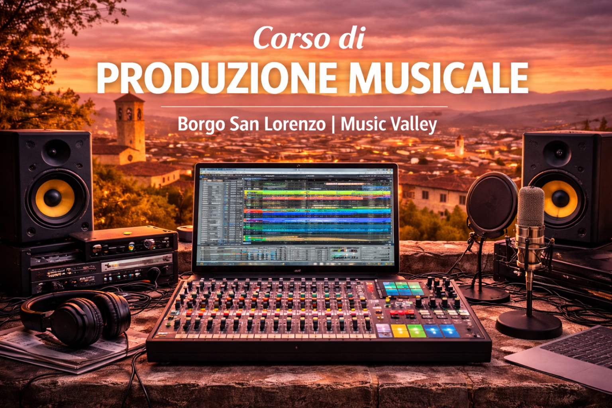

Corso di Produzione Musicale a Borgo San Lorenzo

Il corso di Beatmaking di Music Valley è pensato per chi desidera trasformare un’idea musicale in un brano completo e professionale. Il percorso è focalizzato su mixaggio, tecniche di registrazione e home production, fornendo competenze concrete e immediatamente applicabili.
Mixaggio: equilibrio, profondità e identità sonora
Il mixaggio è il cuore della produzione moderna. Durante il corso si affrontano equalizzazione, compressione, gestione delle dinamiche, spazialità, riverberi ed effetti, con l’obiettivo di ottenere un suono bilanciato, potente e coerente con il genere musicale.Gli studenti imparano a sviluppare un ascolto critico, a costruire una gerarchia sonora efficace e a dare personalità al proprio mix, lavorando su progetti reali.
Tecniche di registrazione
Il corso approfondisce le principali tecniche di recording: scelta e posizionamento dei microfoni, gestione del segnale, registrazione di voce e strumenti, ottimizzazione dell’ambiente acustico e controllo del rumore.
Vengono analizzate sia le registrazioni in studio sia le soluzioni pratiche per ambienti domestici, con un approccio orientato alla qualità e all’efficienza.
Home Production: creare uno studio personale
Oggi è possibile produrre musica di alto livello anche in uno home studio. Il corso guida nella scelta dell’attrezzatura essenziale (interfaccia audio, microfoni, monitor, cuffie), nell’organizzazione del workflow digitale e nella gestione dei progetti all’interno delle principali DAW.
L’obiettivo è rendere ogni studente autonomo nella produzione, dal primo take fino al brano pronto per la pubblicazione.
Un percorso pratico e orientato al futuro
Attraverso esercitazioni concrete e casi reali, gli studenti acquisiscono competenze tecniche e consapevolezza artistica, sviluppando un metodo di lavoro professionale spendibile nel panorama musicale contemporaneo.